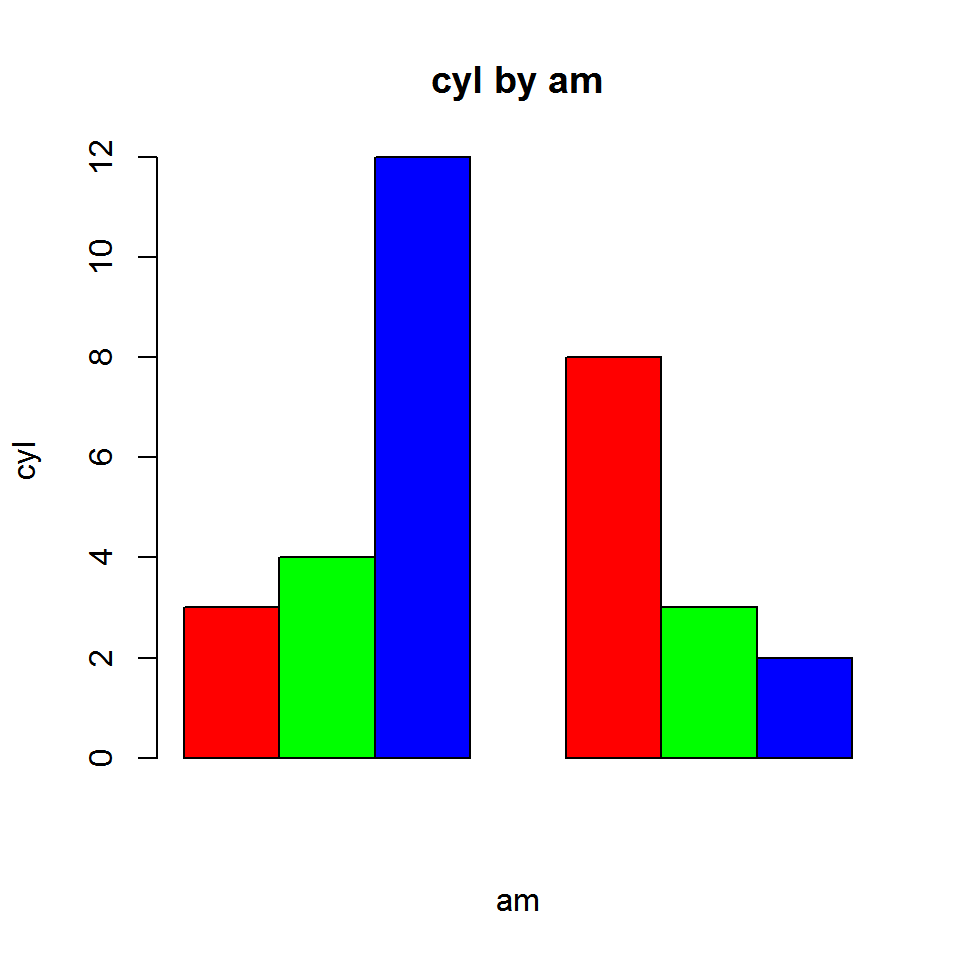

Two way tables are useful in exploring the relationship between categorical variables. This vignette summarizes the following functions available in the testlib package to create and visualize two way tables:
cross_tablebarplot.cross_tablemosaicplot.cross_tableCreate a two way table by specifying the two categorical variables, the relationship between which is being explored.
k <- cross_table(mtcars$cyl, mtcars$am)
k## Cell Contents
## |---------------|
## | Frequency |
## | Percent |
## | Row Pct |
## | Col Pct |
## |---------------|
##
## Total Observations: 32
##
## -------------------------------------------------------------
## | | am |
## -------------------------------------------------------------
## | cyl | 0 | 1 | Row Total |
## -------------------------------------------------------------
## | 4 | 3 | 8 | 11 |
## | | 0.094 | 0.25 | |
## | | 0.27 | 0.73 | 0.34 |
## | | 0.16 | 0.62 | |
## -------------------------------------------------------------
## | 6 | 4 | 3 | 7 |
## | | 0.125 | 0.094 | |
## | | 0.57 | 0.43 | 0.22 |
## | | 0.21 | 0.23 | |
## -------------------------------------------------------------
## | 8 | 12 | 2 | 14 |
## | | 0.375 | 0.062 | |
## | | 0.86 | 0.14 | 0.44 |
## | | 0.63 | 0.15 | |
## -------------------------------------------------------------
## | Column Total | 19 | 13 | 32 |
## | | 0.594 | 0.406 | |
## -------------------------------------------------------------Visualize the two way tables in the following plots:
k <- cross_table(mtcars$cyl, mtcars$am)
plot(k)k <- cross_table(mtcars$cyl, mtcars$am)
plot(k, beside = TRUE)
k <- cross_table(mtcars$cyl, mtcars$am)
plot(k, beside = FALSE, proportional = TRUE)k <- cross_table(mtcars$cyl, mtcars$am)
mosaicplot(k)